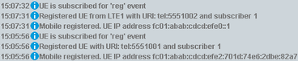

A signaling application can handle only one DUT at a time. To register two DUTs, you need two signaling application instances. To use the two instances in parallel, you must configure different hardware resources for the two instances (different signaling units, RF converters and RF connectors).
Initial situation: The DUTs are switched off and connected to different RF ports. The signaling application instances to be used are configured. The IMS server is set to default settings and switched on. The GUI shows the "IMS" tab of the "Data Application Control" dialog.
The following procedure registers the two DUTs without authentication. The call is set up to a public user ID that is generated by the DAU. In that case, you do not need to configure subscriber profiles. The default subscriber profile with its default settings is used for both DUTs.
Let the DUTs register/attach to the signaling application.
Afterwards, the DUTs automatically register also to the IMS server. You can check the successful registration in the "General IMS Info" area on the IMS tab.

Note the "Registered UE with..." lines. Both DUTs use the default subscriber profile ("subscriber 1").
The first registered DUT has got the automatically generated public user ID "tel:5551001". The second DUT got the ID "tel:5551002".
At one DUT, initiate a call to the other DUT.
With the public IDs assigned in this example, you can dial 5551001 at the second DUT or 5551002 at the first DUT.
You can set up an audio call or a video call.
The called DUT is ringing. Accept the call.
Check that the call setup is complete.
For an audio call, speak into the microphone of one DUT. Then listen to the speaker of the other DUT.
For a video call, you can check, for example, the video quality and the video delay.